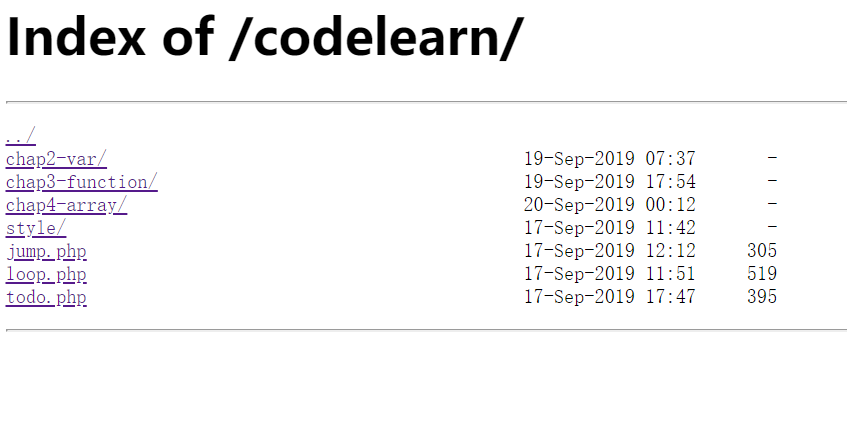
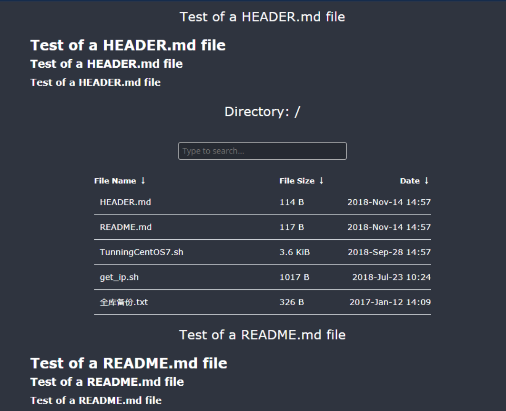

一. 前言
不知为何对nginx情有独钟, 最近练习php, 为了方便写代码, 便想要开启nginx的目录索引功能, 显然不如Apache开启的方便, 几次尝试都崩了... 我这个小白确实有点看不懂nginx的配置文件.
不过最后还是成功了, 记录一下, 万一哪天忘了, 回来看看.
我们都知道在apache下可以配置访问web服务器的某个路径时，自动显示其目录下面的文件列表的，其实Nginx一点也不比apache弱，它当然也可以实现这个功能，而且还非常容易和简单；(嗯, 确实是这样, 不会懵逼, 会点就是几行代码的事情)
二. 解决过程
worker_processes 1;
error_log logs/error.log notice;
events {
worker_connections 1024;
}
http {
include mime.types;
default_type application/octet-stream;
sendfile on;
keepalive_timeout 65;
server {
listen 80;
server_name localhost;
# 这个就是你代码的运行目录, 最好使用绝对路径吧
root "D:/phpstudy_pro/WWW";
location / {
index index.php index.html;
# 下面的三行代码就开启了nginx的目录引索
autoindex on;
autoindex_exact_size off;
autoindex_localtime on;
}
}
}
这样我们就配置好了, 不够好像有个小问题....
哦, 看看这个界面:

nginx自带的目录索引，功能简单、样式也不好看, 不得不承认没有Apache的默认样式好看, 不够嘿嘿, 广大nginx爱好者, 已经给出了他们的解决办法.
使用fancyindex插件来做索引，配上一个漂亮的主题的同时还有搜索的功能.
接下来我们一起来配置吧!
首先是下载这两个, 文件链接给出
https://github.com/aperezdc/ngx-fancyindex/archive/v0.4.3.zip
https://github.com/Naereen/Nginx-Fancyindex-Theme/archive/master.zip

添加好这个模块选好主题 , 就这样了;
详细添加过程下次再写........